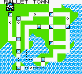

AreaDex/RBY:011
(↑ Back to the AreaDex index.)
Alternative map locations (Generation I) | Alternative Route 104 map | Battle Park (Platinum) | Generation II Safari Zone | Haunted House | Jubilife Condominiums floors 3 and 4 | Map 0x0B (Generation I) | Map 0x6F (Generation I) | Mystery Zone | Record Corner (FireRed/LeafGreen) | R/S Flower Shop (Festa 2002 demo) | Special (location) | Special Area | Sevii Islands 8 and 9 | Unused Olivine City house | Unused Sunyshore City house | Unused Celadon City house
| Town Map name: PALLET TOWN  Identifier (HEX) 0B Identifier (DEC) 11 Default track Unknown Tileset Unknown Size Unknown Map type key area
|
Map 0x0B, nicknamed lost city or unused town is a location in Pokémon Red, Blue, and Yellow with an index number of hex:0B (dec: 11).
Entering it in English Pokémon Red, Blue, and Yellow causes the game to freeze with a white screen. However, map 0x0B are glitch maps that do not immediately freeze the game on some non-English versions of Yellow, and is a glitch map that does not freeze at all in Italian Yellow.
It may be a placeholder for an extra 'key area'. Key areas are areas that player can fly to, such as Pallet Town, Celadon City or Cinnabar Island.
Contents
Traits
Map 0x0B's Town Map name is "Pallet Town". It has the coordinates 0,0 which places it on the 'top-left corner' of the Town Map. This is directly above Indigo Plateau, because here 'y' starts from the top and goes down as it increases. The location of the map is not actually on the top-left corner of the Town Map, because a green area can be seen west of the player, and the place name text can be seen above them.
The coordinates for map 0B can be found at the offset 0x71334 in Pokémon Red and Blue as a 00 value, where the upper nybble marks the y coordinate and the lower nybble marks the x coordinate.
Map 0B's index number follows on from the index numbers of real towns and cities, which range between 00-0A, and it directly precedes Route 1's index number (0C).
When the player enters map 0B, a flag is set to mark that the player has visited it, and normally this only happens for real towns and cities.
This flag is an addition of bit 3 (+08) in the memory address D70C (in Red/Blue) or D70B (in Yellow). This address is the second memory address in the 'available fly locations' word.
Even if this flag is set, the player cannot fly to it; but according to Koolboyman there is a single byte in the ROM holding the number of locations the player can fly to that can be changed to let the player fly to it.
Map 0B has no wild Pokémon data.
Notes
1. There is unused shop data placed between the data for the Fuchsia and Cinnabar Poké Marts, but it may not be intended for map 0B. The item list contains Great Balls, Super Potions, Hyper Potions, Full Heals and Revives.
2. Game Freak created a map for Capsule Monsters that shows what eventually became Kanto. Capsule Monsters is an early design concept for what was finalized as Pokémon.
There are notably 12, not 11 spots on the map with a number or letter within a square. These may have been for key areas, because 11 of these spots are placed where the key areas in the final game are.
The odd spot out (the one that may have been for an unreleased 12th location) is found below "7" and is marked "C". This is located below what is now Celadon City and may have been above the sea.
Leak
On February 16, 2019 assets from the Pokémon Red and Green beta were leaked[1]. The leaked assets included the layout of Map 0B. The town is smaller than the empty space on the Kanto map at the "C" spot would indicate. A truck, identical to the S.S. Anne Ship Truck in the final game, could be found here, suggesting that this town might have been related to the Vermilion harbor map.[2]
Viewing map 0B on the Town Map
It's possible to view map 0B on the Town Map with a GameShark, or with 8F or ws m arbitrary code execution.
GameShark method
- With the items pack open and a Town Map to use, enter the GameShark code 010B5ED3 (Red/Blue) or 010B5DD3 (Yellow).
- View the Town Map and the player will be at coordinates 0,0 in a place called 'Pallet Town'.
8F and ws m codes
These codes are for pigdevil2010's or TheZZAZZGlitch's 8F and ws m payloads.
8F items:
| Position | Item | Quantity |
|---|---|---|
| 3 | Lemonade | ×11 |
| 4 | TM34 | ×94 |
| 5 | TM11 | ×201 |
Code:
- ld a, 0B
- ld (D35E),a
- ret
For the ws m items, change the quantity of the TM34 from 94 to 93. This changes ld (D35E),a to ld (D35D),a.
Dokokashira door glitch route
It's possible to get to map 0B with the dokokashira door glitch with the following route:
- Start in Route 1.
- Go to Pallet Town.
- Counting the first step in Pallet Town as step 1, travel 112-115 steps, landing the last one in Blue's house.
Note that the game will freeze with a white screen as usual, so it is kind of pointless.
Expanded items pack method
Map 0x0B can be accessed in the expanded items pack by adjusting the quantity of item 36 (D365/4) to 11 in a building such as a Pokémon Center, which will change the exit destination to map 0x0B.
Like above, attempting to access the map will sadly result in a white screen, unless the player is accessing one of the special map 0x0B in non-English European versions below.
See also
- Map 0x0B (French Yellow)
- Map 0x0B (German Yellow)
- Map 0x0B (Italian Yellow)
- Map 0x0B (Spanish Yellow)
References
- ↑ What Dreams May Come: Prototype Data for Pokémon Red and Green from Helix Chamber
- ↑ The Many Prototype Maps of Red and Green from Helix Chamber